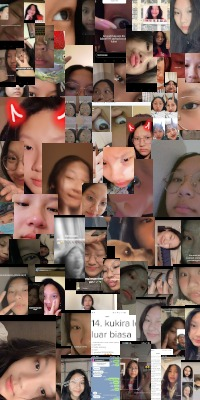

Haii Ester !! kembali lagi dengan saya, kali ini gausah ribet ribet pake
kode morse dan apalah itu segala macem. Nanti malah dibilang ngikutin
ejos hahaha. Ini sebelum lanjut aku saranin kamu buka di browser laptop
yaaa, takutnya ada yang error soalnya hehe. Yaaa ada beberapa hal yang
pengen gw sampein ke lu sih ini sebenernyaa.. Ini salah satu nya ada di
bawah :)
Dimulai dari ini. HAHAHAHAHA. ini sebenernya gw malu besar sih soal
bagian ini, lu inget ga? ini pas masih pertama pertama bgtt. We were
just kids who knew nothing and tried to play with love. Yaa dan ga
nyangka bahkan sampe sekarang lu jadi orang yang spesial bagi gw,
walaupun dengan semua kenangan senang dan sedih nya. wkwkwk
Season 1
Yaa lanjut lagi inii bagian paling unik dan paling spesial, karena
ini kita balik lagi dan bareng lagi walaupun kau di amrik yh hhhh.
Disini gw inget, waktu itu lu sempet ada wacana pindah kesana yaa
kalo gasalah. yang seru nya lagi disini kita beda waktu bgt bgt bgt
sampe nunggu nunggu bgt pas lu udah siang. And again we ended up
being strangers in that moment.
Season 2

Season 3 ?
V
Huft ! pasti geli sendiri ya liat yang atas tadii… sorry.. Yaaa hai
ester, bagaimana kabarmu? Lama tidak bertemu? Kayaknya udah ngga gitu
lagi yaa wkwkwk. Gausah panic itu tiba tiba muncul tombol hijau dan
merah, kita bahas nanti ajaa.
Kita mulai darimana ini ya. Btw ini gw tulis pas malem mingguuu kayaknya
syahdu banget gitu. Okay pertama-tama ini gw mau bilang makasih bangettt
ester, gw bersyukur juga kita bisa deket lagii, walaupun pas pertama
ketemu lagi itu kalo bisa diskip sebenernya juga gamau sih wkwkwk. Itu
lucuu pake banget, semua campur aduk jadi satu, entah seneng karena bisa
ketemu lagi, entah sedih karena kita ternyata udah se asing itu waktu
itu, atau malah entah bingung itu beneran atau ngga. Cuma yaaa ga
nyangka aja bisa seperti sekarang, setelah banyak pergelutan ego dengan
diri sendiri sih sebenernya, Cuma yaaa namanya urusan hati, mau ego
segede anggaran negara juga kayaknya gabakal mempan ya, apalagi untuk
orang se special luuuuu ter omg. Gw seneng banget gw bisa cerita cerita
lagi ke luuuuu, bisa tau cerita lu lagiii, bisa ketemu berdua lagi sama
lu, I wont forget all the days we spent together.
Gw sebenenrnya gataau mau tulis apa, Cuma gw bingung ter, ini pertanyaan
selalu ada di kepala gw aja gitu. Lu kan udah tau kalo gw masih suka
sama lu (ohno ini bakal cringe siap-siap geli). Tapi yaaa gw waktu itu
pernah tanya kan lu mau ngerem gw atau ngga, kayak nyuruh stop atau
ngga, tapi kata lu ngikut ajaa, ekspektasi gw sebenernya pas confess
(cacat anjg confess lewat chat) waktu itu ga takut sama reaksi lu, tapi
lebih ke takut kalo lu bakal berubah ajaa dan mulai menjauh lagiii, tapi
ternyata ngga. Fuck disitu gw makin bingung. Soalnya lu tuh kayak heuh,
menyebalkan sih lo, bilangnya gamau pacaran, apalagi waktu itu bilangnya
gapapa pacaran kecuali sama lu, gw kayak “jahat juga ya, memangnya saya
se buruk apa” tapi anehnya lu tuh ga ngebuat gw ngerasa buruuk sama
sekali. Hayoloh bingung sendiri kaaan, tapi lu nya juga lampu ijo
menurut gw, tolong jangan permainkan saya :(
Yaa ini mulai masuk ke yang serius, gw gatau ini waktu yang tepat atau
bukan, tapi menurut gw semua adalah waktu yang tepat sebenernya, gw aja
yang malu hahaha. Kalau boleh jujur aku ingin menjadi pacarmu saja ter
(lagi). Wkwkwk. yang gw takutin dari penentuan ini yaaa friendzone…
Ester kalo lu baca ini, gw Cuma mau bilang. Mau ga kalo kita bareng
lagi? Not as friends, but this time as a couple. Karena gw mau jujur,
rasa suka ini udah berubah jadi rasa sayang.